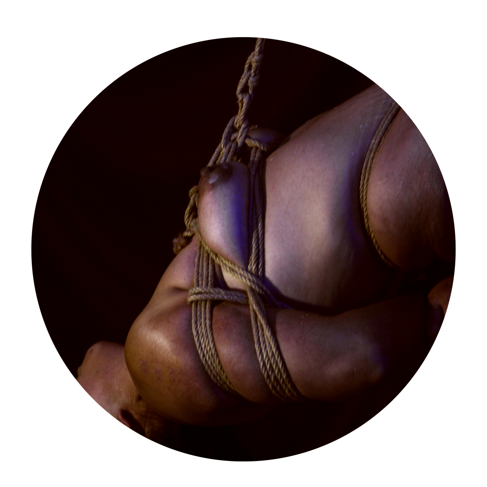

¿Qué es el Shibari?

El Shibari es el arte japonés de atar el cuerpo humano con cuerdas. Combina técnica, estética y una relación clara entre quien ata y quien es atado. En la práctica, la persona que sostiene la cuerda dirige la estructura. Cada vuelta de cuerda, cada nudo y cada línea sobre el cuerpo se colocan con intención. El rigger conduce la escena, administra la tensión de la cuerda, observa la postura, la respiración y la respuesta del cuerpo que está dentro de la atadura. La cuerda crea una dinámica definida entre ambas personas. Quien ata guía el proceso y construye la estructura; quien es atado se coloca dentro de esa estructura y responde a ella. La práctica se desarrolla a partir de confianza, presencia y atención mutua. El Shibari también tiene una dimensión estética. Las líneas de cuerda sobre el cuerpo forman patrones que buscan equilibrio visual, proporción y claridad en la composición. La postura del cuerpo, la tensión de las cuerdas y la forma general de la atadura se integran como una sola pieza.
Quiénes somos

Piel y Cuerdas es un espacio educativo dedicado a la enseñanza del Shibari en Quito, Ecuador. Nuestro objetivo es transmitir esta práctica desde una perspectiva técnica, responsable y respetuosa con su origen cultural.
El proyecto busca ofrecer un entorno seguro donde las personas puedan aprender progresivamente las bases del manejo de cuerda, la comunicación y los principios de consentimiento que forman parte de esta disciplina.

Nuestro fundador
El proyecto fue fundado por un practicante de Shibari con varios años de experiencia en la práctica y estudio de las técnicas de atadura japonesa.
Su enfoque está orientado a la transmisión responsable de conocimientos, priorizando el cuidado físico y emocional de quienes participan en los procesos de aprendizaje.
Enfoque educativo
La enseñanza se basa en el desarrollo progresivo de habilidades técnicas, con especial atención en la seguridad, el consentimiento informado y la comunicación entre quienes practican.
Programa de formación
- Fundamentos del manejo de cuerda
- Seguridad y protocolos de consentimiento
- Estructuras básicas de atadura
- Comunicación entre rigger y modelo
- Desarrollo progresivo de técnica